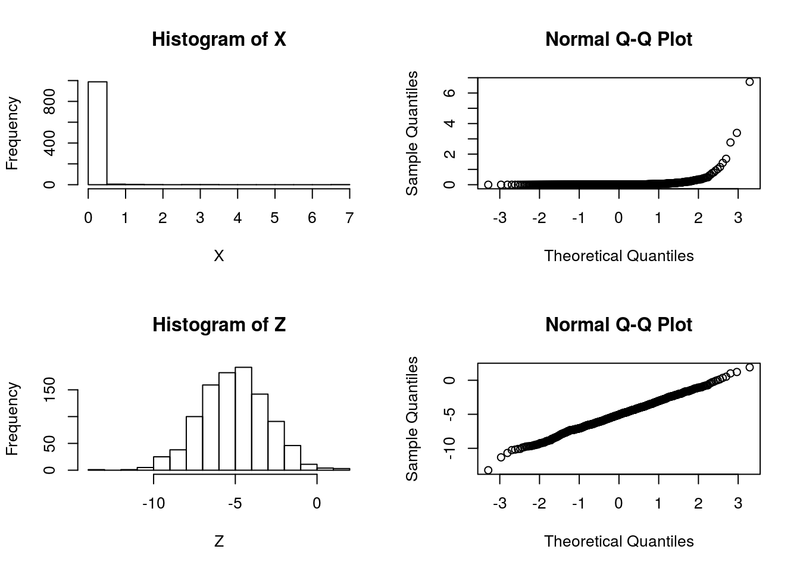

Last updated: 2017-03-06
Code version: c7339fc
Suppose that we are considering whether to model some data \(X\) as normal or log-normal. In this case we’ll assume the truth is that the data are log normal, which we can simulate as follows:
X = exp(rnorm(1000,-5,2))We will use \(Z\) to denote \(\log(X)\):
Z = log(X)And let’s check by graphing which looks more normal:
par(mfcol=c(2,2))
hist(X)
hist(Z)
qqnorm(X)
qqnorm(Z) So it is pretty clear that the model ``\(M_2: \log(X)\) is normal" is better than the model “\(M_1: X\) is normal”.
Now consider computing a “log-likelihood” for each model.
To compute a log-likelihood under the model “X is normal” we need to also specify a mean and variance (or standard deviation). We use the sample mean and variance here:
sum(dnorm(X, mean=mean(X), sd=sd(X),log=TRUE))[1] -135.3375Doing the same for \(Z\) we obtain:
sum(dnorm(Z, mean=mean(Z), sd=sd(Z),log=TRUE))[1] -2125.232Done this way the log-likelihood for \(M_1\) appears much larger than the log-likelihood for \(M_2\), contradicting both the graphical evidence and the way the data were simulated.
The explanation here is that it does not make sense to compare a likelihood for \(Z\) with a likelihood for \(X\) because even though \(Z\) and \(X\) are 1-1 mappings of one another (\(Z\) is determined by \(X\), and vice versa), they are formally not the same data. That is, it does not make sense to compute \[\text{"LLR"} := \log(p(X|M_1)/p(Z|M_2))\].
However, we could compute a log-likelihood ratio for this problem as \[\text{LLR} := log(p(X|M_1)/p(X|M_2)).\] Here we are using the fact that the model \(M_2\) for \(Z\) actually implies a model for \(X\): \(Z\) is normal if and only if \(X\) is log-normal. So a sensible LLR would be given by:
sum(dnorm(X, mean=mean(X), sd=sd(X),log=TRUE)) - sum(dlnorm(X, meanlog=mean(Z), sdlog=sd(Z),log=TRUE))[1] -3080.778The fact that the LLR is very negative supports the graphical evidence that \(M_2\) is a much better fitting model (and indeed, as we know – since we simulated the data – \(M_2\) is the true model).
sessionInfo()R version 3.3.2 (2016-10-31)
Platform: x86_64-pc-linux-gnu (64-bit)
Running under: Ubuntu 14.04.5 LTS
locale:
[1] LC_CTYPE=en_US.UTF-8 LC_NUMERIC=C
[3] LC_TIME=en_US.UTF-8 LC_COLLATE=en_US.UTF-8
[5] LC_MONETARY=en_US.UTF-8 LC_MESSAGES=en_US.UTF-8
[7] LC_PAPER=en_US.UTF-8 LC_NAME=C
[9] LC_ADDRESS=C LC_TELEPHONE=C
[11] LC_MEASUREMENT=en_US.UTF-8 LC_IDENTIFICATION=C
attached base packages:
[1] stats graphics grDevices utils datasets methods base
other attached packages:
[1] workflowr_0.4.0 rmarkdown_1.3.9004
loaded via a namespace (and not attached):
[1] backports_1.0.5 magrittr_1.5 rprojroot_1.2 htmltools_0.3.5
[5] tools_3.3.2 yaml_2.1.14 Rcpp_0.12.9 stringi_1.1.2
[9] knitr_1.15.1 git2r_0.18.0 stringr_1.2.0 digest_0.6.12
[13] gtools_3.5.0 evaluate_0.10 This site was created with R Markdown